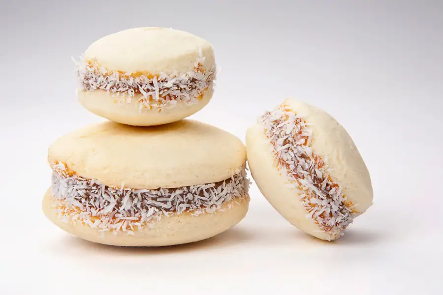
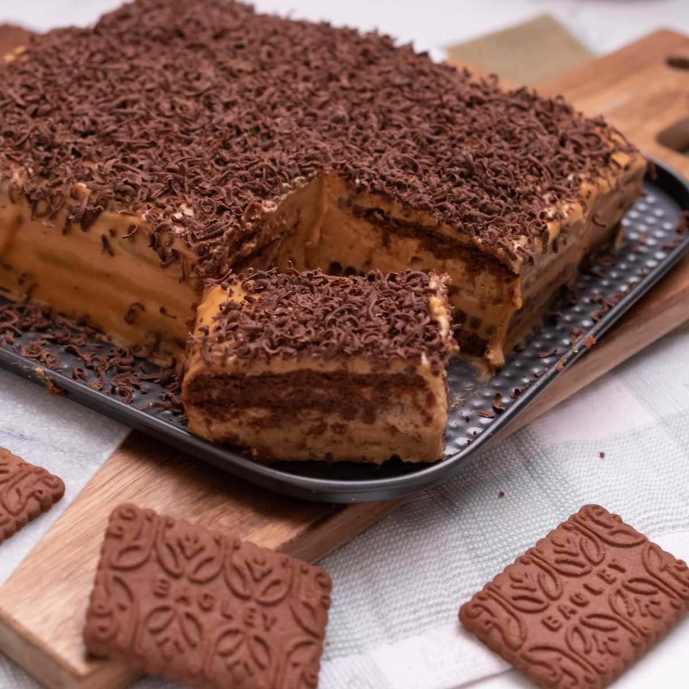
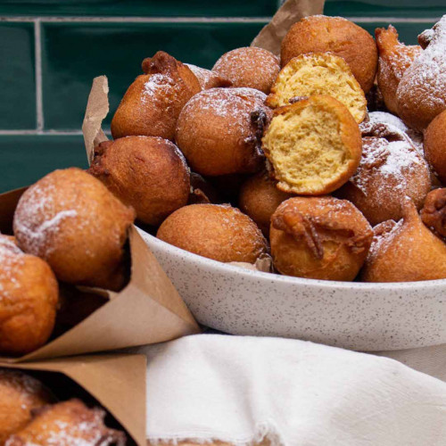
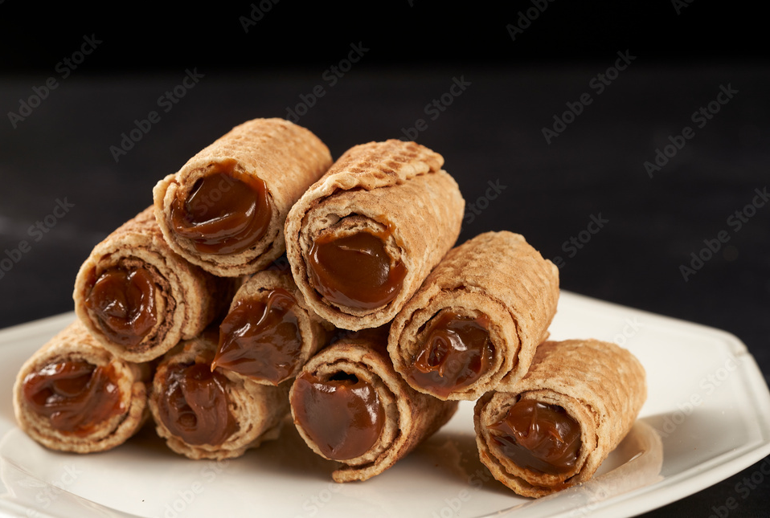
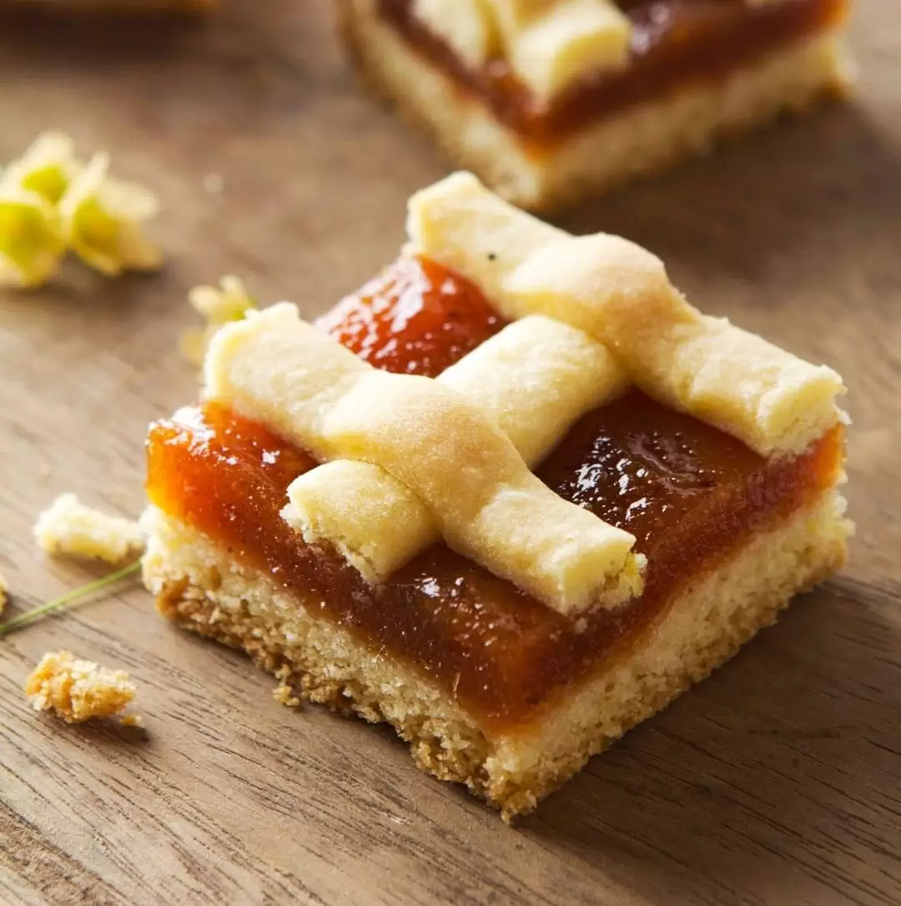

Recetas Dulces
Alfajores de Maicena
- Manteca 200 grs
- Azucar impalpable 300 grs
- Huevos 3
- Yemas 2
- Esencia de Vainilla 1 cda
- Ralladura de limón 1 cda
- Harina 0000 200 grs
- Fécula de maiz 400 grs
- Polvo para hornear 1 cdita
- Sal 1/2 cda
- Dulce de leche 500 grs
- Coco rallado 100 grs
Ingredientes
Preparacion
Para la masa de los alfajores: en un bol colocar la manteca pomada y agregar el azúcar impalpable. Batir apenas para que no se volatilice el azúcar e ir agregando los huevos de a uno más las yemas de a una sin dejar de batir hasta cremar. Aromatizar con la ralladura de limón y la esencia de vainilla e integrar con batidor. Por otro lado, mezclar la harina con el almidón de maíz, el polvo de hornear y la sal. Tamizarlos e incorporarlos en forma de lluvia a la mezcla anterior y con movimientos envolventes. Envolver la masa en film y reservarla en heladera por una hora. Romper la masa y volverla a unir para darle calor y poder estirarla. Estirarla del espesor de 3 mm y cortar discos de unos 7 cm. Estibar los discos en placa enmantecada y cocer al horno medio por 10 minutos. Para el armado: tomar dos bases y rellenar con dulce de leche, espolvorear el dulce de leche con coco rallado
Postre Balcarce

Ingredientes para el bizcochuelo
- Huevos 9
- Harina 0000 100 gr
- Azucar 180 gr
- Esencia de vainilla a gusto
- Azucar 180 gr
- Nueces picadas 80 gr
- Esencia de vainilla a gusto
- Merengue cocido 150 gr
- Dulce de leche 500 gr
- Coco rallado 180 gr
- Crema de leche 800 cc
- Azúcar impalpable, para decorar
- 250 g de castañas en almíbar
Ingredientes para el relleno
Preparacion
Batir los huevos con el azúcar, a blanco. Agregar la harina, mezclar y verter en el molde. Hornear a 180º, 30 minutos. Dejar enfriar y cortarlo en 3 capas. Reservar. Batir la crema a punto chantilly con el azúcar y la esencia. Separar unas cucharadas de crema batida. Agregarle al resto las nueces, las castañas y el merengue roto. El armado: Untar los discos de bizcochuelo con dulce de leche. Armar la torta dentro del mismo molde alternando bizcochuelo y crema de castañas, hasta formar una torta de 3 capas. Cubrir los laterales de la torta con la crema reservada, espolvorear con coco rallado. Cubrir la superficie con abundante azúcar y quemar con una planchita, en el momento de servir.
Chocotorta
Ingredientes
- Galletitas de chocolate 700 grs
- Dulce de leche 400 grs
- Queso crema 400 grs
- Leche 150 ml
- Cacao en polvo
Preparacion
Mezclar en un bol el dulce de leche con el queso crema hasta lograr una pasta uniforme, de color marrón clarito. Buscar una fuente chata para usar como base. Poner en un recipiente un poco de leche para ir mojando las galletitas (sólo unos segundos, porque sino se deshacen). Luego de pasar las galletitas por leche, hacer un piso con las mismas. Colocar la mezcla de dulce de leche y queso cremas arriba del primer piso. Volver a mojar las galletas y hacer otro piso de galletitas, colocar nuevamente la mezcla y repetir este proceso para formar varias capas. Cuando esté terminada, dejar reposar y poner en la heladera, mínimo una hora, para que se enfríe. Al servir espolvorear con cacao.
Pastelitos

Ingredientes
- Harina 0000 500 grs
- Grasa ablandada o fundida 100 grs
- Sal fina 1 cucharadita y media de café
- Agua 200 cc
- Vinagre de alcohol o jugo de limón 1 cda
- Margarina pomada 100 grs
- Almidón de maíz 40 grs
- Dulce de membrillo o batata 200 grs
- Agua 300 cc
- Azúcar 300 g
- Miel 1 cucharada sopera
- Piel de media naranja
- Grasa vacuna o aceite para freír 2 kg
Preparacion
Para la masa colocar en un bol amplio la harina, la grasa y la sal. Agregar el agua junto con el vinagre (o jugo de limón) y amasar hasta lograr un bollo liso. Dejar descansar 15 minutos bien tapada. Estirar la masa con palo de amasar o pastalinda .Formar un rectángulo largo y angosto, untar o pincelar con la margarina pomada y espolvorear apenas con almidón de maíz. Enrollar la masa como un pionono, aplastar, dejar descansar en frío 20 minutos, retirar, estirar nuevamente en forma de rectángulo, untar con la margarina pomada, espolvorear con fécula de maíz y enrollar nuevamente como un pionono. Llevar al frío por 20/ 30 minutos . Estirar la masa en forma de rectángulo (3 mm aprox), recortar los bordes para liberar el hojaldre y cortar en cuadrados de 8x8 cm de lado. Armado: colocar sobre una tapita un cubo de 2 x 2 cm de dulce de membrillo o batata, pincelar con agua alrededor, colocar la tapa de masa arriba y presionar alrededor para que se peguen las dos tapas. Hacer los pliegues para formar la “pollerita” ,(humedecé con agua para pegar los pliegues) enfriar, freír en aceite o grasa, primero.... se fríen a 120ºc, apenas caliente, si metes el dedito no debe quemar. El pastelito se va al fondo, con un tenedor separas suavemente los bordes para que abran las capas del hojaldre, enseguida comienzan a flotar subís el fuego para dorar a 180°C, escurrir en papel absorbente. Para el almíbar: Cocinar en una cacerola el azúcar junto con el agua, la miel y la piel de naranja. Llevar a hervor durante 3 minutos y reservar a temperatura ambiente hasta utilizar.
Buñuelos
Ingredientes
- Huevos 2
- Azucar 1/2 taza
- Harina leudante 1 y 1/2 taza
- Extracto de vainilla o rlladura de naranja
- Leche 1/2 taza
- Aceite para freir
Preparacion
Mezclar los huevos, el azúcar, la harina leudante y el extracto de vainilla o la ralladura de naranja. Incorporar a la mezcla anterior la leche. Con ayuda de dos cucharas tirar cucharadas de la mezcla sobre el aceite abundante y bien caliente. Freír hasta que estén doraditos. Dejar enfriar y espolvorear con azúcar impalpable o canela.
Bolas de fraile

Ingredientes
- Harina 0000 1 kg
- Azúcar 200 grs
- Sal ½ cdita
- Esencia de vainilla 1 cdita
- Huevos 2
- Levadura fresca 50 g
- Yemas 2
- Leche 360 cc
- Manteca blanda 120 grs
- Aceite de girasol o maíz 1,5 L
- Azúcar 300 grs
Preparacion
Colocar la harina y el azúcar en un bol y formar una corona. En el lateral espolvorear la sal. En el centro colocar los huevos, las yemas, la esencia de vainilla y la levadura desgranada y la ralladura. Ir agregando la leche tibia de a poco hasta lograr una masa tierna y amasar constantemente. Formar una masa e incorporar la manteca blanda. Seguir amasando hasta lograr que se incorpore toda la materia grasa logrando una masa lisa. Dejar descansar tapada con un papel film durante 20 minutos. Cortar bollos de 30 a 40 g y dejar leudar durante 15 minutos. (Deben quedar bien livianas). Calentar el aceite a fuego bajo. Fritar en aceite a fuego bajo y dejarlas hasta que estén bien doradas. Es importante que estén bien livianas para asegurarse que estén cocidas por dentro. Retirarlas del aceite con una espumadera y girarlas en una bandeja con azúcar. Dejar enfriar. Colocar el dulce de leche en una manga de repostería. Cortar las bolas de fraile por un lateral con ayuda de una tijera y rellenarlas.
Cubanitos
Ingredientes
- Harina 0000 1 y 1/3 tazas
- Yemas 5
- Polvo de hornear 1 cdita
- zucr 1 cda
- Agua, cantidad necesaria
- Dulce de leche repostero, cantidad necesaria
Preparacion
Cernir la harina con el polvo de hornear, añadir las yemas, y 1 ó 2 cucharadas de agua y 1 cucharada de azúcar. Mezclar y formar una masa firme. Estirar la masa en pequeñas cantidades sobre la mesa enharinada y dejar de unos 1/2 cm de grosor, cortar tiritas de unos 2 cm de ancho y enrollar en forma de espiral alrededor de moldecitos en forma de cigarro enmantecados, humedeciendo uno de los bordes para que se adhieran mejor. Llevar al horno moderado sobre la bandeja enmantecada unos 10 a 15 min. Dejar enfriar y luego con una manga introducir completamente el dulce de leche repostero.
Pasta Frola
Ingredientes
- Manteca 250 gr
- Huevos 2
- Ralladura de 1 limón
- Harina 0000 400 grs
- Almidón de maíz 100 grs
- Polvo por hornear 20 grs
- Sal 1 cdita
- Membrillo 500 grs
- Ralladura de limón
- Agua un chorrito
Preparacion
Batir la manteca blanda con el azúcar, agregar los huevos de a uno y seguir batiendo. Saborizar con ralladura de limón o esencia de vainilla. Tamizar la harina con el almidón, el polvo para hornear y la sal. Agregar la mezcla al batido de manteca y unificar. Estirar entre dos papeles film y llevar a heladera durante dos horas. Para el membrillo, colocar en una cacerola con un chorrito de agua, ralladura de limón y hacer un puré. Dejar enfriar antes de usar. Forrar la tartera de 23 cm y rellenar con membrillo. Hacer las tiras y pincelar con doradura (huevo, sal, azúcar y un chorrito de leche). Llevar a horno medio hasta que se dore aprox unos 40 minutos. Decorar los bordes con gel de brillo y coco rallado.